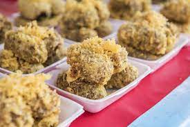

Khao Mao Tod

Ingredients (4 servings)
- 2 cups sticky rice, soaked for 4-6 hours or overnight
- 4 ripe bananas, peeled and cut into halves
- 1 cup shredded coconut
- 1/2 cup sesame seeds
- 1 cup all-purpose flour
- 1/2 cup rice flour
- 1/4 cup sugar
- 1/2 teaspoon salt
- Vegetable oil for frying
Preparation
Step 1
- Drain the soaked sticky rice and blend it until it becomes a coarse paste. Set aside.
Step 2
- In a bowl, mix shredded coconut and sesame seeds. Set aside for coating.
Step 3
- In another bowl, combine all-purpose flour, rice flour, sugar, and salt. Add water gradually to make a smooth batter.
Step 4
- Heat vegetable oil in a deep fryer or a heavy-bottomed pan to 350°F (175°C).
Step 5
- Dip each banana half into the sticky rice paste, ensuring it's well-coated.
Step 6
- Roll the coated banana in the coconut-sesame mixture, pressing gently to adhere.
Step 7
- Dip the coated banana into the batter, covering it completely.
Step 8
- Deep fry the banana until it turns golden brown and crispy. Ensure the sticky rice is cooked through.
Step 9
- Remove from the oil and let it drain on paper towels.
Step 10
- Repeat the process for the remaining banana halves.
Step 11
- Serve Khao Mao Tod warm as a delightful snack or dessert.
Step 12
- Enjoy your delicious homemade Khao Mao Tod!